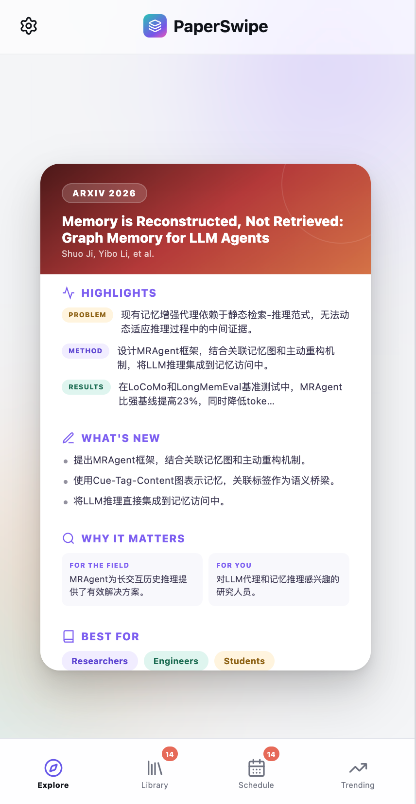
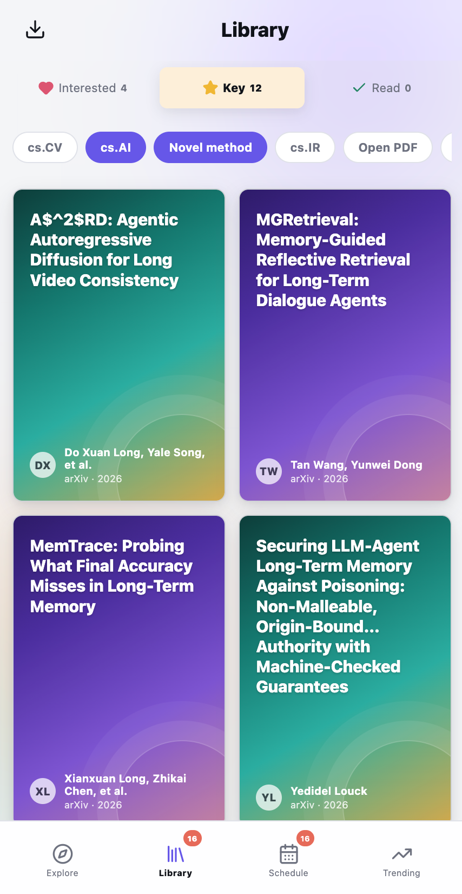
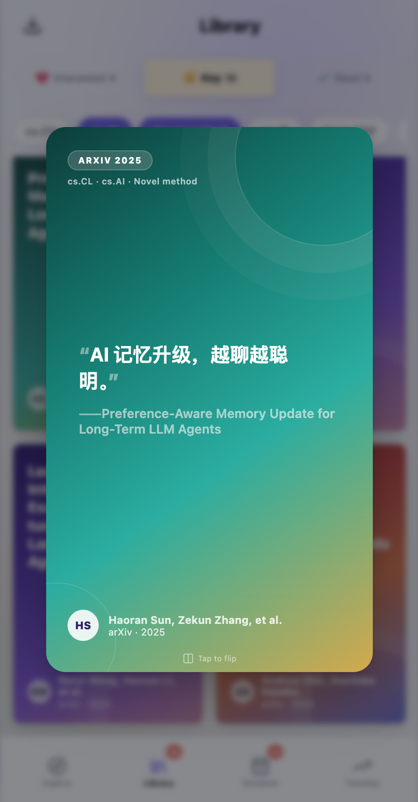
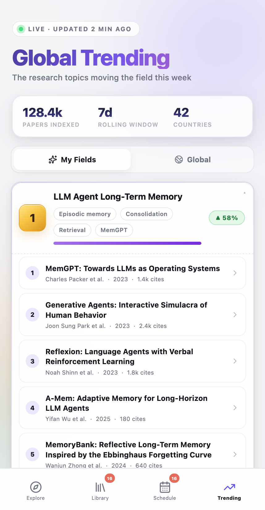
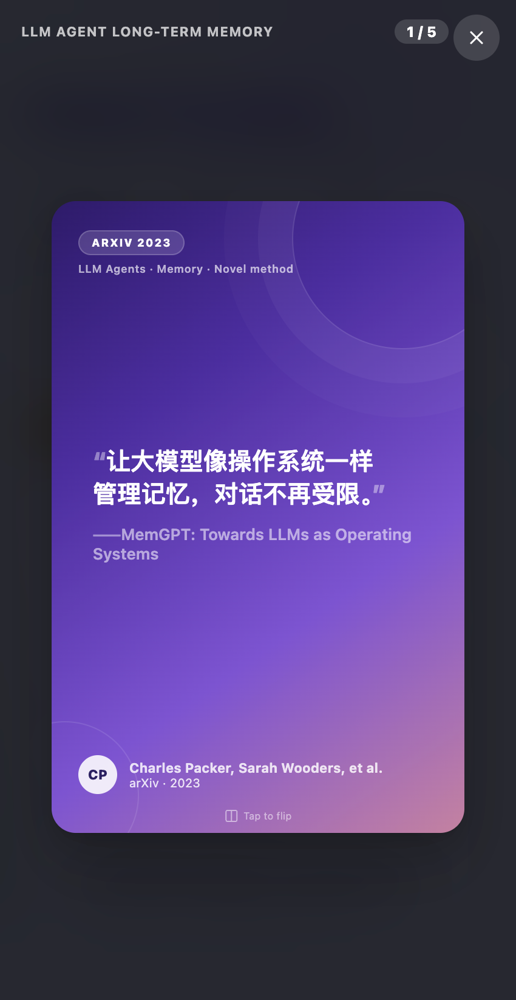
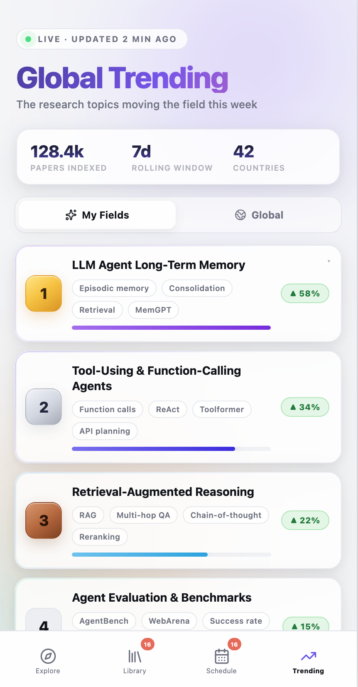

What if Google Scholar felt like TikTok?
别再搜论文了，
开始刷论文。
AI 先认识你，再替你发现论文。
像刷 Tiktok 和 Tinder 一样，
几分钟做完过去要花几小时才能做完的筛选。

痛点
读论文最贵的成本，
不仅仅是「读」，还有找。
问题不是论文不够多，而是从「几千篇结果」到「值得读的那一篇」之间，
隔着太多重复、低效、几乎没有信息增量的体力劳动。
一个大胆的想法
如果找论文，
能像刷 TikTok 一样呢？
不用你输入关键词、翻几十页搜索结果、逐篇打开判断相关性。
AI 先理解你是谁、最近在研究什么、已经读过哪些论文，
然后直接把你最可能感兴趣的论文推到你面前——你只需要滑一下。
于是有了 🎉
01 · Explore
AI 先认识你，
再替你发现论文
不用每次重新搜索关键词。告诉 AI 你的研究方向，它会自动拆解成精准检索词，实时联通 Semantic Scholar、arXiv、OpenAlex，把你最该看的新论文直接推到眼前。
- 说人话就行——AI 帮你把想法翻译成专业检索策略
- 一句话读懂一篇论文——AI 摘要卡片正面：核心贡献一句话说清
- 翻到背面——问题、方法、成果、创新点、适合谁读，全部拆解好
- 四向滑动——左滑跳过 · 右滑收藏 · 上滑标重点 · 下滑标已读



02 · Library
划走的每一篇论文，
有了一个真正属于你的家
收藏不是存进一个杂乱的文件夹然后忘记。Library 把你滑过的论文自动分类归档，完整保留 AI 当时的精读笔记，随时回来都能秒懂。
- 三栏分类——感兴趣 · 重点 · 已读，进度一眼看清
- 主题标签筛选——AI 自动提炼标签，秒速定位方向
- 长按即可归档或安排阅读——删除或一键排进日程
- 一键导出——BibTeX / Zotero，无缝接入你的文献工作流
03 · Schedule & AI 助手
AI 帮你规划阅读，
论文不再躺在收藏夹吃灰
告诉 AI 你的研究目标、DDL 和空闲时间，它会自动从 Library 里挑选论文，按优先级规划阅读路线，安排进每天的日历——收藏不再是终点，而是真正被读完的起点。
- 一周阅读计划——按优先级自动铺满你的每一天
- “今天最值得读的论文是哪篇？”——AI 秒回答案和理由
- “帮我规划这个方向的阅读 roadmap”——AI 帮你排出成体系的学习路径
- 拖拽调整——不满意随时改期、调整优先级




04 · Trending
今天，全世界都在看什么
不用天天刷 Twitter，不用每天逛 arXiv。PaperSwipe 实时告诉你哪些方向正在爆发、哪篇论文开始被疯狂引用、哪个赛道现在值得投入——永远站在信息最前沿。
- 实时热点榜——按领域滚动更新的高热度论文
- 一键展开——最火 Topic 下的代表性论文一次看全
- 引用飙升提醒——重要工作出现的第一时间知道
- My Fields / Global——只看你的领域，或看全球大势
我们的理念
未来发现论文的方式，
不应该是 Search，
而应该是 Discover。
Search 要你先知道自己要找什么，再一页页去验证。
Discover 是你只需要说清楚自己是谁，剩下的交给 AI——
让「知道有这篇论文存在」这件事本身，变得毫不费力。
把「找论文」的力气，
还给「读论文」本身。
传统方式：搜索、翻页、翻译、收藏、然后忘记。
PaperSwipe：AI 帮你发现、5 秒帮你判断、自动帮你安排。
欢迎大家提建议，我们还在持续迭代中 ❤️